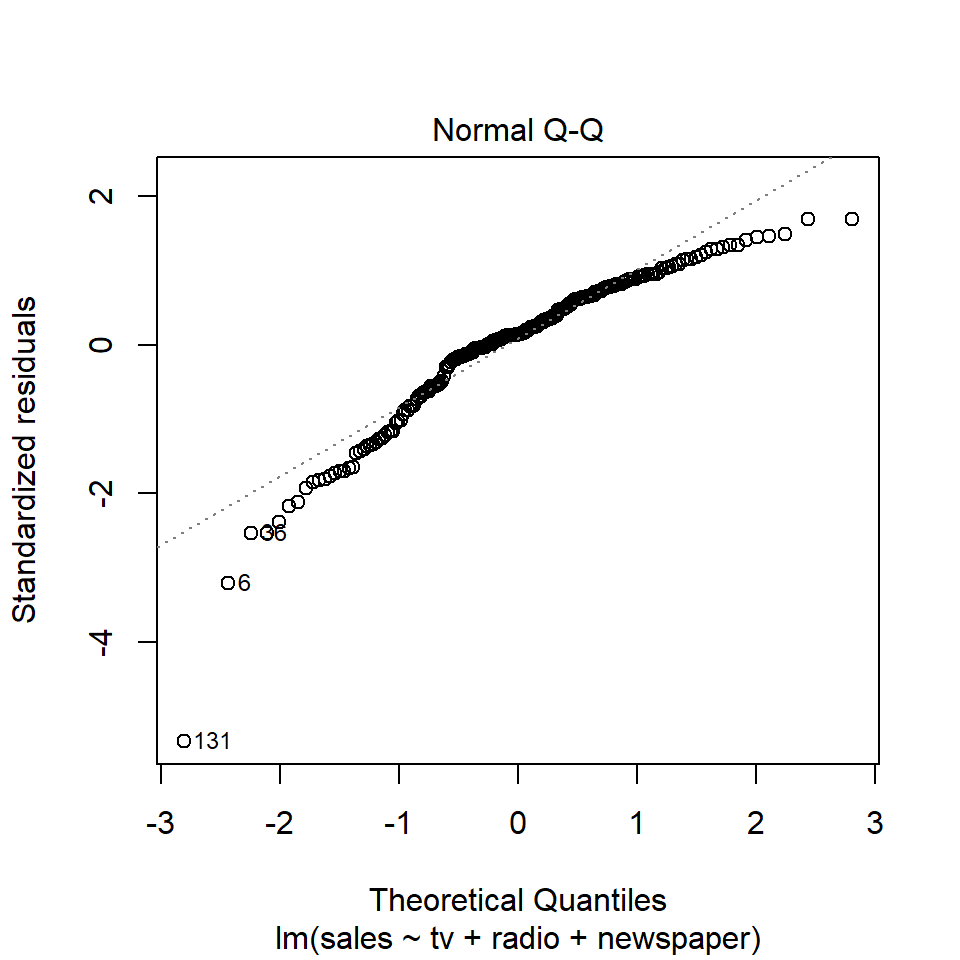
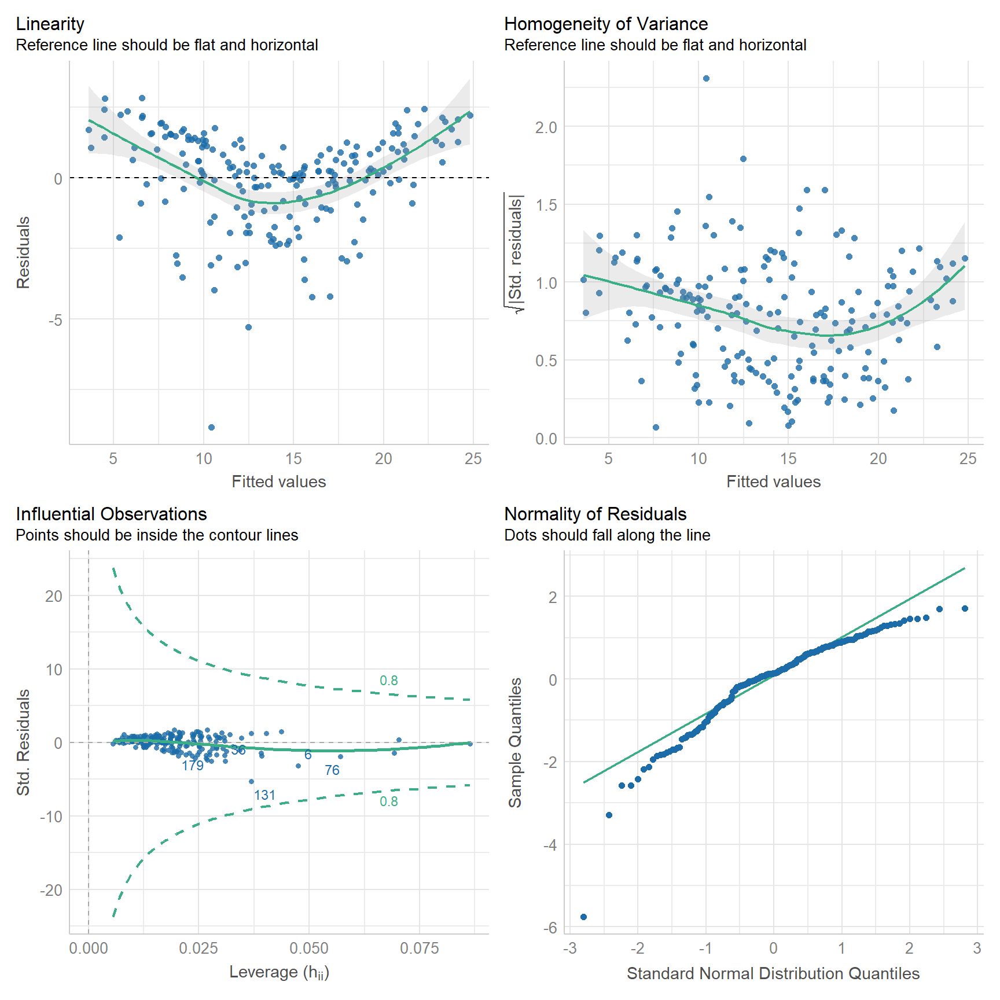
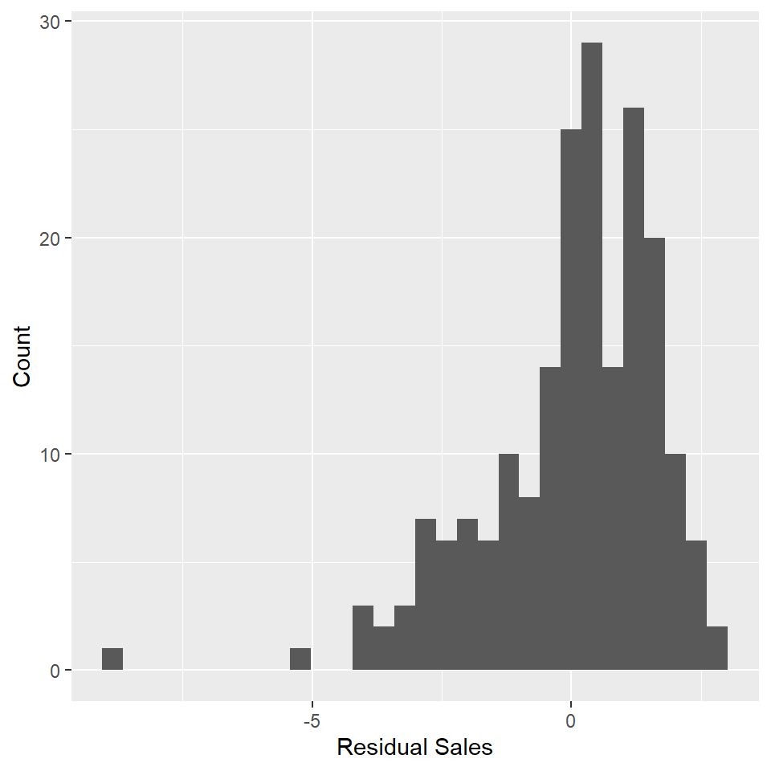
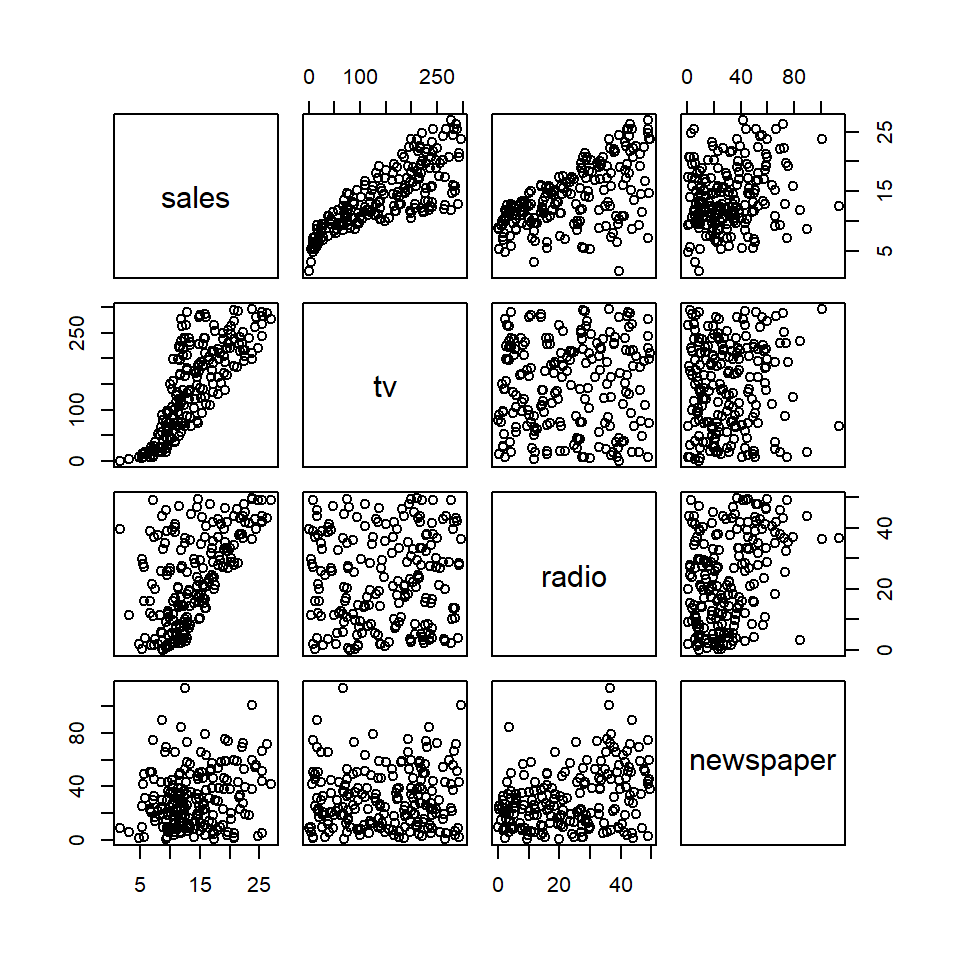

Lab 08: Multiple Linear Models
(Stats) Learn how to interpret multiple linear models, make predictions, and use standard tests and diagnostics for evaluation, including making diagnostic plots. (R) Model summaries. Diagnostic plots. Prediction and plotting.
Outline
Objectives
This lab will guide you through the process of
R Packages
We will be using the following packages:
You’ll want to install ISLR2 and car with install.packages(c("ISLR2", "car")).
Data
-
adverts- Observations of product sales and investments in advertising across various media.
- package: none
- reference: https://www.statlearning.com/resources-second-edition
-
Boston- A dataset containing housing values in 506 suburbs of Boston.
- package:
ISLR2 - reference: https://cran.r-project.org/web/packages/ISLR2/ISLR2.pdf
-
HandAxes- Includes measurements of handaxes from the Furze Platt site stored at the Royal Ontario Museum.
- package:
archdata - reference: https://cran.r-project.org/web/packages/archdata/archdata.pdf
Multiple Regression
In this section, we will walk through how to build a multiple linear model in R. This is not fundamentally different than building a simple linear model. The only difference is that we need to update the model formula. For the simple linear model, the formula is just y ~ x, for the multiple linear model, it’s y ~ x1 + x2 + … + xn. We simply add the covariates together using the plus-sign.
Let’s work through an example with the adverts data set used in the textbook An Introduction to Statistical Learning With Applications in R. We want to know whether investment in different advertising media increases sales of some product. The website for the ISLR book hosts several data sets. The authors have also written companion R packages (ISLR and ISLR2, for the first and second editions, respectively). Now, as it happens, the path to a csv file does not have to be a local path pointing to a location on your computer. It can be also be a url pointing to where a file is stored remotely on a website, so reading in the advertising data from the ISLR website is as easy as this.
adverts <- read_csv("https://www.statlearning.com/s/Advertising.csv") |>
rename_with(tolower) |>
select(sales, tv, radio, newspaper)Before fitting the model, let’s have a look at some summaries of the data with skim().
skim(adverts)| Name | adverts |
| Number of rows | 200 |
| Number of columns | 4 |
| _______________________ | |
| Column type frequency: | |
| numeric | 4 |
| ________________________ | |
| Group variables | None |
Variable type: numeric
| skim_variable | n_missing | complete_rate | mean | sd | p0 | p25 | p50 | p75 | p100 | hist |
|---|---|---|---|---|---|---|---|---|---|---|
| sales | 0 | 1 | 14.0 | 5.22 | 1.6 | 10.38 | 12.9 | 17.4 | 27.0 | ▁▇▇▅▂ |
| tv | 0 | 1 | 147.0 | 85.85 | 0.7 | 74.38 | 149.8 | 218.8 | 296.4 | ▇▆▆▇▆ |
| radio | 0 | 1 | 23.3 | 14.85 | 0.0 | 9.97 | 22.9 | 36.5 | 49.6 | ▇▆▆▆▆ |
| newspaper | 0 | 1 | 30.6 | 21.78 | 0.3 | 12.75 | 25.8 | 45.1 | 114.0 | ▇▆▃▁▁ |
And now the model.
adverts_lm <- lm(sales ~ tv + radio + newspaper, data = adverts)
summary(adverts_lm)
#>
#> Call:
#> lm(formula = sales ~ tv + radio + newspaper, data = adverts)
#>
#> Residuals:
#> Min 1Q Median 3Q Max
#> -8.828 -0.891 0.242 1.189 2.829
#>
#> Coefficients:
#> Estimate Std. Error t value Pr(>|t|)
#> (Intercept) 2.93889 0.31191 9.42 <0.0000000000000002 ***
#> tv 0.04576 0.00139 32.81 <0.0000000000000002 ***
#> radio 0.18853 0.00861 21.89 <0.0000000000000002 ***
#> newspaper -0.00104 0.00587 -0.18 0.86
#> ---
#> Signif. codes: 0 '***' 0.001 '**' 0.01 '*' 0.05 '.' 0.1 ' ' 1
#>
#> Residual standard error: 1.69 on 196 degrees of freedom
#> Multiple R-squared: 0.897, Adjusted R-squared: 0.896
#> F-statistic: 570 on 3 and 196 DF, p-value: <0.0000000000000002Note the change in how we interpret the coefficients! Each coefficient must be interpreted relative to some value of the other covariates. For example, the coefficient estimate for television is 0.046. We interpret this as saying, “For some given investment in radio and newspaper advertising, increasing tv advertising by $1000 will increase the number of units sold by approximately 46 units (because the units are measured in thousands, so 1000 x 0.046).”
Exercises
- Load the
Bostondataset from theISLR2package withdata(). - Subset the variables in the dataset using the
select()function fromdplyr. Choose all the following variables:-
medv= median household value -
rm= number of rooms -
crim= per capita crime rate -
lstat= percent of households with low socioeconomic status
-
- Summarize the table with
skim(). - Make a simple linear model of median household value (
medv) as a function of average number of rooms (rm).- Call the model
simple_lm.
- Call the model
- Now make a multiple linear model of median household value (
medv) as a function of average number of rooms, per capita crime rate, and percent of household with low socioeconomic status (rm,crim, andlstat, respectively).- Call the model
boston_lm.
- Call the model
- Summarize the model with
summary().- Are all the coefficients significantly different than zero?
- How much of the variance in house value is explained by these variables (ie what is the R-squared value)?
- How do you interpret the coefficient for number of rooms? What effect does increasing the number of rooms have?
Model Evaluation
As always, we can use the base plot() function to check model assumptions, using the which argument to specify the type of plot we want to make. For example, we can make a Q-Q plot like so:
plot(adverts_lm, which = 2)
Or, we can use the check_model() function from the performance package.
check_model(
adverts_lm,
check = c("linearity", "homogeneity", "outliers", "qq")
)
How does it look? Have we met the assumptions of linear regression? Consider, for exmaple, that Q-Q plot. It would seem to suggest that the residuals are skewed to the left. That’s not good because the linear model assumes that the residuals are normally distributed and centered on zero. Another way to check for this is to plot a histogram of the residuals and check whether it has the shape of a bell curve.
adverts_residuals <- tibble(residuals = residuals(adverts_lm))
ggplot(adverts_residuals, aes(residuals)) +
geom_histogram() +
labs(
x = "Residual Sales",
y = "Count"
)
😬 You can see the left skew as indicated by the Q-Q plot.
Exercises
- Plot a histogram of the residuals in
boston_lm.- Use
residuals()to get the residuals out of the model object. - Use
geom_histogram().
- Use
- Run
check_model()onboston_lmand check for linearity, homogeneity, outliers, and qq. - Does the model meet the assumptions of linear regression?
ANOVA
When evaluating the model, we should also check whether adding variables actually makes a significant improvement. To do that, we need to compare the complex model to a simpler model. In R, we do that with the anova() function. Here, we’re going to compare the full model to set of simpler models that are nested within it. Note that in each case the simpler model is a subset of the more complex model (ie, these are nested models)! The ANOVA wouldn’t work otherwise!
m1 <- lm(sales ~ tv, data = adverts)
m2 <- lm(sales ~ tv + radio, data = adverts)
m3 <- lm(sales ~ tv + radio + newspaper, data = adverts)
anova(m1, m2, m3)
#> Analysis of Variance Table
#>
#> Model 1: sales ~ tv
#> Model 2: sales ~ tv + radio
#> Model 3: sales ~ tv + radio + newspaper
#> Res.Df RSS Df Sum of Sq F Pr(>F)
#> 1 198 2103
#> 2 197 557 1 1546 544.05 <0.0000000000000002 ***
#> 3 196 557 1 0 0.03 0.86
#> ---
#> Signif. codes: 0 '***' 0.001 '**' 0.01 '*' 0.05 '.' 0.1 ' ' 1This is a sequential ANOVA that does comparisons in order, first comparing the tv model to the intercept model, then the tv + radio model to the tv model, and so on, to the full model. For each step, it reports the residual sum of squares (RSS or the error in the model) and evaluates whether the difference in that value between the models is significant. The degrees of freedom (DF) represents the difference in residual degrees of freedom (Res.Df) between the simple and complex models (for row 2, that’s 199-198=1). The sum of squares (Sum of Sq) is the difference in the Residual Sum of Squares (RSS) for each model (for row 2, that’s 5417-2103=3315). The F statistic is then the ratio of (Sum of Sq/Df) to what is effectively the mean squared error of the full model (for row 2 that’s (3315/5)/(557/196) = 1166). The intuitive idea here is that an F-statistic close to zero means that adding the covariate does not reduce the model’s RSS or error to any meaningful degree. As always, the F-statistic is then compared to an F distribution with the degrees of freedom to determine how likely that particular value is, assuming the null hypothesis that there is no significant improvement. Notice that each of these covariates makes a significant contribution to the model of sales except newspaper spending. Why might that be?
One last point, before moving on. You do not have to explicitly generate a sequence of nested models. You can simply call anova() on the full model and it will generate those models for you. However, do be aware that the printed ANOVA table is slightly different (additional columns and different column names) in the two cases. Here it is the for the full advertising model:
anova(adverts_lm)
#> Analysis of Variance Table
#>
#> Response: sales
#> Df Sum Sq Mean Sq F value Pr(>F)
#> tv 1 3315 3315 1166.73 <0.0000000000000002 ***
#> radio 1 1546 1546 544.05 <0.0000000000000002 ***
#> newspaper 1 0 0 0.03 0.86
#> Residuals 196 557 3
#> ---
#> Signif. codes: 0 '***' 0.001 '**' 0.01 '*' 0.05 '.' 0.1 ' ' 1Exercises
- Use the
anova()function to comparesimple_lmtoboston_lm.- State your null and alternate hypotheses.
- Is the complex model worth it?
Collinearity
Linear regression assumes that the predictor or independent variables are uncorrelated. However, this is often not the case. To evaluate this assumption, you can do one of two things. I actually recommend that you always do both. First, you can check for pairwise correlations visually with the pairs() function from base R or analytically with the cor() argument. Both work with tables. Second, you check for multicollinearity using the vif() function to estimate the Variance Inflation Factor for each covariate.
Check for collinearity
pairs(adverts)
cor(adverts)
#> sales tv radio newspaper
#> sales 1.000 0.7822 0.5762 0.2283
#> tv 0.782 1.0000 0.0548 0.0566
#> radio 0.576 0.0548 1.0000 0.3541
#> newspaper 0.228 0.0566 0.3541 1.0000Notice that pairs() generates a scatterplot matrix with all pairwise combination of variables. If there’s no correlation, the scatterplot should look like a cloud of random points. If there is a correlation, the points will cluster along some line. The cor() function generates a correlation matrix (by default a Pearson’s correlation matrix). Of course, every variable correlates perfectly with itself, hence a value of 1 along the diagonal. Values above and below the diagonal are simply mirrors of each other, as is the case with the scatterplot matrix. The fact that each variable correlates with sales is not problematic in this case, as that is the relationship we are trying to model. What we want to focus on here is the degree of correlation between the predictors tv, radio, and newspaper. It is preferable that the correlations between these be as close to zero as possible, but again, it will rarely be the case that they are exactly zero. Any value greater than 0.7 is a cause for concern and should lead you to update your model to address it.
Check for multicollinearity
Generally, it’s a good idea to test for correlations between predictors before building a model. However, the vif() function only works on model objects, which makes sense as the variance being inflated is variance around coefficient estimates made by the model. That means, of course, that you have to build a model first before evaluating its covariates for multicollinearity. Using the linear model we made with the advertising data, that looks like this:
vif(adverts_lm)
#> tv radio newspaper
#> 1.00 1.14 1.15This generates a named vector, with one value for each covariate. A general rule of thumb is that VIF for a coefficient should be less than 5. After that, you should consider changes to your model.
Exercises
- Use
pairs()on theBostondata to visualize pairwise relationships between variables.- Do you see any potential trends?
- Use
cor()on theBostondata to estimate the Pearson correlation coefficient for each pair of variables.- Are there any strong correlations?
- Use
vif()on thebostom_lmmodel to estimate the Variance Inflation Factor for each covariate.- Are any greater than 5 for any of them?
Homework
- Load the
Handaxesdataset from thearchdatapackage usingdata(). - Now let’s explore this dataset.
- Check the variables that it includes with
names(). You should see maximum length (L), breadth (B), and thickness (T), among others. - Try renaming those to make them more informative and readable with
rename(). - Use
select()to subset this table, taking only those three variables (length, breadth, and thickness). - Summarize this table with
skim(). - Visualize the pairwise relationships between variables with
pairs(). - Estimate Pearson’s correlation coefficient for each pair of variables with
cor().
- Check the variables that it includes with
- Now making a simple linear model showing the relationship (if any) between the length and breadth of handaxes. Be sure to do all of the following:
- Use
summary()to report the model. - Use
predict()andgeom_line()to visualize the modeled relationship. Be sure to plot this over the data! - Add a confidence interval with
geom_ribbon(). - Use
check_model()to visually inspect the model. - Does the model satisfy the assumptions of linear regression?
- Use
- Build a multiple linear model of handaxe length as a function of breadth and thickness. Be sure to do all of the following:
- Use
summary()to report the model. - Use
check_model()to visually inspect the model. - Does the model satisfy the assumptions of linear regression?
- Use
- Use the
vif()function on the multiple linear model.- Is the VIF for either variable greater than 5?
- Conduct an ANOVA using the
anova()function to compare the simple and complex models.- Does the complex model significantly improve on the simpler model?